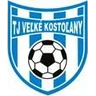

DomáciHostia
 FK TEMPO Partizánske
FK TEMPO Partizánske11
 MFK Vrbové
MFK VrbovéNávrh webu, nie oficiálna stránka klubu
Mestský futbalový klub Vrbové. Muži hrajú V. ligu Severozápad, v klube je 7 tímov od prípravky po áčko. Domov je štadión Jozefa Adamca.
FK TEMPO PartizánskeMFK Vrbové TJ Družstevník ChtelnicaMFK VrbovéMFK Vrbové U15
TJ Družstevník ChtelnicaMFK VrbovéMFK Vrbové U15 OŠK Horné OtrokovceMFK Vrbové U13
OŠK Horné OtrokovceMFK Vrbové U13, výkop 10:00
MFK Vrbové U11 A, výkop 10:30
MFK Vrbové U11 B MFK Stará Turá
MFK Stará Turá, výkop 09:00
TJ Družstevník ChtelnicaMFK Vrbové U9Zimná prestávka. Jarná časť sa pre naše tímy začína v nedeľu 7. marca 2027, keď A-mužstvo hrá vonku na ihrisku TJ Partizán Prečín.

Telovýchovná jednota Veľké Kostoľany U15 vonku, 14. kolo 12:30| # | Tím | Z | V | R | P | Skóre | B |
|---|---|---|---|---|---|---|---|
| 11. | 15 | 5 | 3 | 7 | 18:33 | 18 | |
| 12. | 15 | 4 | 3 | 8 | 19:37 | 15 | |
| 13. | 15 | 3 | 3 | 9 | 20:40 | 12 | |
| 14. | 15 | 2 | 2 | 11 | 19:34 | 8 | |
| 15. | 15 | 2 | 2 | 11 | 8:35 | 8 |
13.miesto z 16 po 15 zápasoch sezóny 2026/27
3 výhier, 3 remíz, 9 prehier, skóre 20:39 vo všetkých súťažiach
Jozef Adamec, prezývaný Hatrlo, sa narodil 26. februára 1942 vo Vrbovom. Rodák z Vrbového, legenda Spartaka Trnava. So Spartakom získal päť majstrovských titulov, ďalšie dva počas vojenčiny v Dukle Praha. V československej lige odohral 383 zápasov a strelil 170 gólov.
Pri storočnici klubu v júli 2022 dostal vrbovský štadión jeho meno.